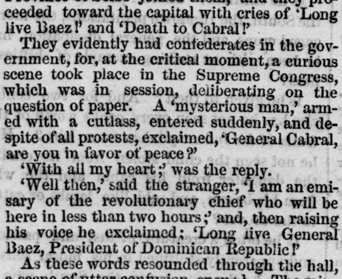
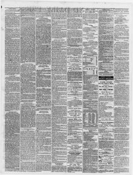

See the full pageVer la página completaWell then,’ said the stranger, ‘1 am anemi sary of the«Bueno, entonces», dijo el desconocido, «soy un emisario de la»
A mysterious armed man suddenly entered a congressional session and declared himself an emissary of General Baez, causing the ministers to flee in terror while General Cabral agreed to the popular will. The intruder was revealed to be General Pedro Guillermo, who had himself appointed dictator until an election on December 14 unanimously made Baez President of the Dominican Republic. Consequently, Cabral accepted a military position under the new government, of which Guillermo became the practical head.Un enigmático hombre armado irrumpió sorpresivamente en el recinto del Congreso proclamándose emisario del general Báez, lo que provocó la huida aterrorizada del gabinete ministerial mientras el general Cabral se plegaba a la voluntad popular. El intruso resultó ser el general Pedro Guillermo, quien se hizo ungir dictador provisional hasta que en las votaciones del 14 de diciembre se designó por unanimidad a Báez presidente de la República Dominicana. A consecuencia de ello, Cabral aceptó una comandancia militar en la nueva administración, cuyo timón efectivo retenía Guillermo.
FULL TEXT:TRADUCCIÓN:
ceeded toward the capital with cries of 'Long live Baez!' and 'Death to Cabral!'cedió hacia la capital con gritos de «¡Viva Báez!» y «¡Muera Cabral!»
They evidently had confederates in the government, for, at the critical moment, a curious scene took place in the Supreme Congress, which was in session, deliberating on the question of paper. A 'mysterious man,' armed with a cutlass, entered suddenly, and despite of all protests, exclaimed, 'General Cabral, are you in favor of peace?'Evidentemente tenían confederados en el gobierno, pues, en el momento crítico, tuvo lugar una escena curiosa en el Congreso Supremo, que estaba en sesión, deliberando sobre la cuestión del papel. Un «hombre misterioso», armado de un machete, entró de repente, y a pesar de todas las protestas, exclamó: «General Cabral, ¿está usted a favor de la paz?»
'With all my heart;' was the reply.«Con todo mi corazón»; fue la respuesta.
'Well then,' said the stranger, 'I am an emissary of the revolutionary chief who will be here in less than two hours;' and, then raising his voice he exclaimed; 'Long live General Baez, President of Dominican Republic!'«Pues bien», dijo el desconocido, «soy un emisario del jefe revolucionario, que estará aquí en menos de dos horas»; y, entonces, alzando la voz, exclamó: «¡Viva el general Báez, Presidente de la República Dominicana!»
As these words resounded through the hall,Cuando estas palabras resonaron por la sala,
The Portland Daily Press. Portland, Me., January 19, 1866.
See the original at the Library of CongressVer el original en la Biblioteca del Congreso
Published by: N.A. Foster & Co., 1862-1921.Publicado por: N.A. Foster & Co., 1862-1921.
Edition: Edition 1Edición: edición 1
Page: 2Página: 2
Frequency: daily (1862–1921)Frecuencia: diario (1862–1921)
Collection: Chronicling America, Library of CongressColección: Chronicling America, de la Biblioteca del Congreso
LCCN: sn83016025LCCN: sn83016025
ISSN: 2643-7597ISSN: 2643-7597
OCLC: 9338674OCLC: 9338674
Rights: public domain, according to the Library of CongressDerechos: dominio público, según la Biblioteca del Congreso